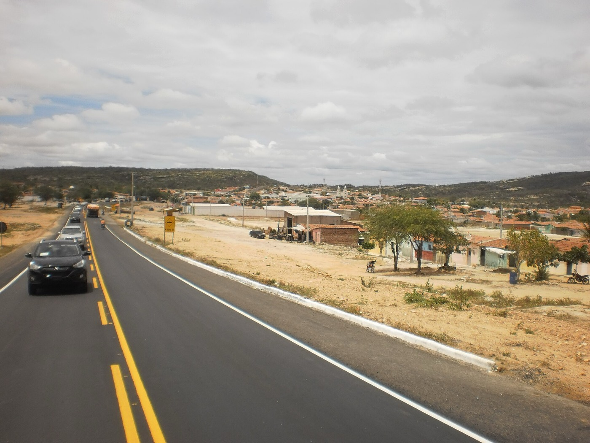

Você é filho de quem?
Os 43.256 descendentes falecidos do Cel. Caetano Dantas Correia, até a 6ª geração, num só livro. Digite o nome de um parente que já se foi e veja o caminho dele até o patriarca.
Paraíba, 1710 21 filhos Acari, 1797
Os 43.256 descendentes falecidos do Cel. Caetano Dantas Correia, até a 6ª geração, num só livro. Digite o nome de um parente que já se foi e veja o caminho dele até o patriarca.
Paraíba, 1710 21 filhos Acari, 1797
Segundo Câmara Cascudo, Caetano Dantas Correia veio de Pernambuco com as boiadas e a família e fundou, por volta de 1740, a Fazenda Carnaúba, no Seridó. Com Josefa de Araújo Pereira teve 21 filhos. A cidade que nasceu ali leva o nome da família: Carnaúba dos Dantas.


Os 21 filhos de Caetano e Josefa, na ordem em que nasceram. Abra um ramo para ver os netos; cada nome abre o assento no topo da página.
Bispo, governador, padres, coronéis e desembargador: 40 lombadas do mesmo livro. Escolha uma para ler a história.
Ordenado padre em Caicó em 1934, foi bispo de Caicó em 1952, depois de Garanhuns, em Pernambuco, e de Ruy Barbosa, na Bahia, até 1975. Em 1978 publicou O Coronel de Milícias Caetano Dantas Correia, a pesquisa sobre o próprio tetravô. Morreu em Carnaúba dos Dantas, a cidade que o patriarca fundou.
Filho de Antônio Adelino Dantas, neto de José Adelino de Maria Dantas, bisneto de Maria Rosalina da Silva Dantas, trineto de Alexandre José Dantas, tetraneto do Cel. Caetano Dantas Correia.
Abrir o assento completo

Acari5.650 nascidos
1754 a 1985mais comum: Dantas

Jardim do Seridó5.229 nascidos
até 1992mais comum: Azevedo

Picuí3.087 nascidos
1823 a 1980nome de passarinho
Caicó3.796 nascidos
cidade e diocesemais comum: Araújo

Florânia1.441 nascidos
1802 a 1967mais comum: Medeiros

Currais Novos1.011 nascidos
1824 a 1966mais comum: Dantas

Parelhas584 nascidos
1825 a 1974mais comum: Dantas

Carnaúba dos Dantas561 nascidos
desde 1779a terra do Caetano
O livro só guarda quem já faleceu. Então o caminho começa pelos mais velhos da sua casa: o nome completo de um avô ou bisavô basta.

Pergunte o nome completo de um avô falecido5 min
Anote a cidade e o ano em que nasceu2 min
Digite parte do nome no cartão10 s
Confira pelos pais e pelo ano1 min
Clique nos filhos para descer até você1 min
Compare com o primo e veja o grau10 s
Mande o link no grupo da família10 s
Seu caminho até o Caetano10 min
Por que só tem gente falecida? A árvore do FamilySearch mostra publicamente só quem já morreu. Vivos ficam privados, e é bom que fiquem.
De onde vieram esses nomes? Da árvore pública do FamilySearch, a partir do Cel. Caetano Dantas Correia (LQ52-8X9), coletada em 5 de novembro de 2026. Quem montou essa árvore foram gerações de pesquisadores, muitos deles da própria família.
Por que para na 6ª geração? Foi até onde a coleta chegou: 43.256 descendentes. Seus pais ou avós podem estar logo abaixo de alguém daqui.
Achei um erro. Como corrijo? Corrija direto no FamilySearch, que é a fonte; o botão no assento leva à pessoa certa. Na próxima coleta o livro se atualiza.
Meu bisavô não aparece. Tente sem acento, só com o primeiro e o último nome, ou procure pelo pai dele. Muitos registros antigos trazem só “Maria” ou “José”.
Por que a mesma pessoa vem de dois ramos? Porque primos casavam com primos. Metade dos casamentos do livro é entre descendentes, e o assento conta por quantos caminhos alguém chega ao Caetano.
O que quer dizer pentaneto? Filho, neto, bisneto, trineto, tetraneto, pentaneto: cada palavra é uma geração a mais entre você e o patriarca.
Caetano nasceu na Paraíba ou em Pernambuco? O FamilySearch registra Paraíba do Norte; Câmara Cascudo escreve que ele veio de Pernambuco. Fica a pergunta para a próxima festa.
Posso mandar para a família? Pode. Todo assento tem um link próprio, e o grau de parentesco entre duas pessoas também.